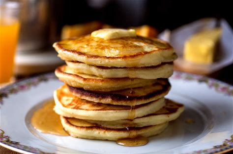
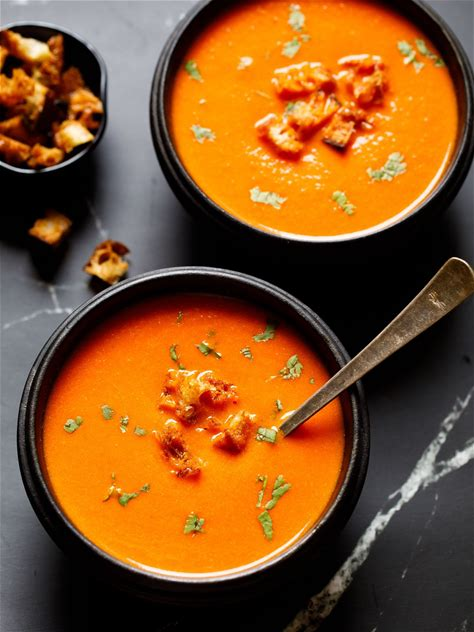
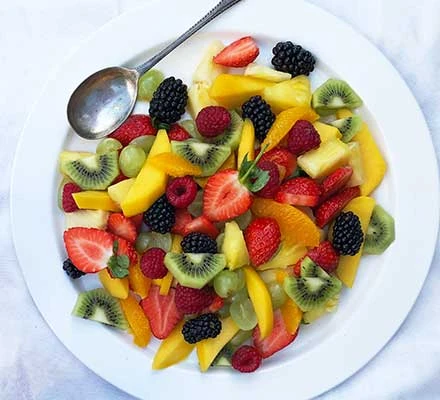
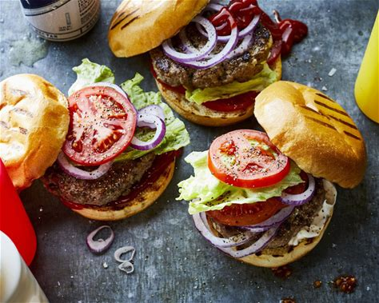
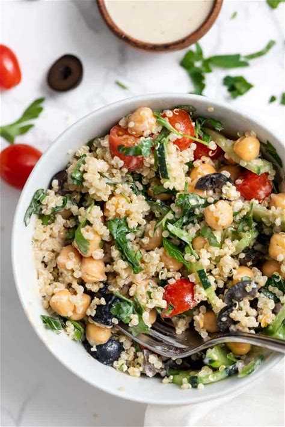
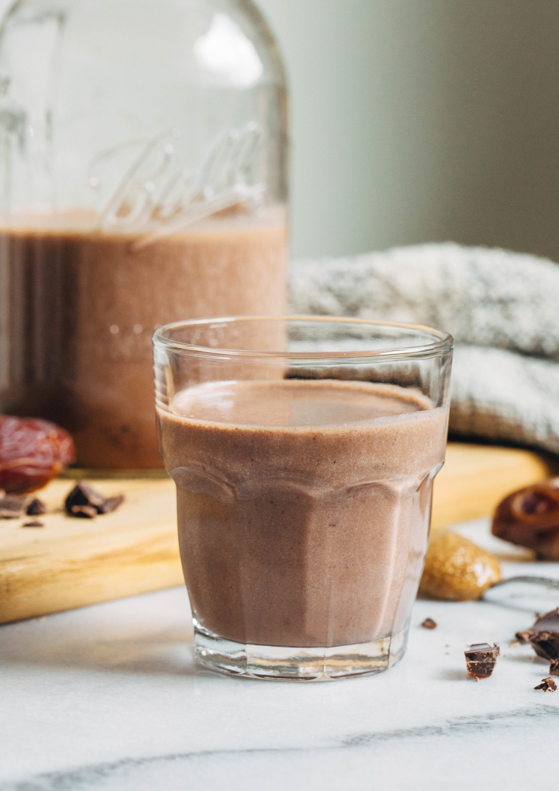
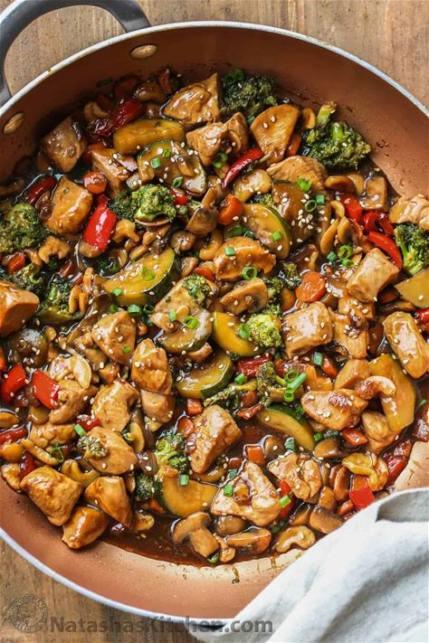
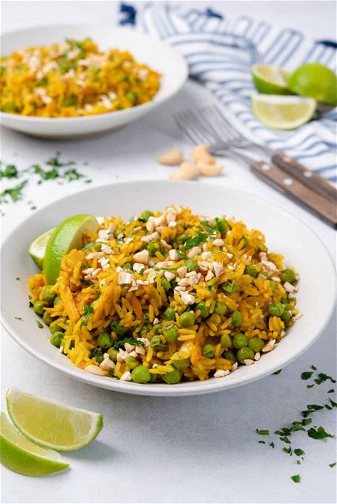

🍲 Weekly Recipe Planner
Chicken salad bowl
Tropical vibes in every bite! Juicy chicken paired with sweet pineapple and tangy teriyaki dressing makes this bowl feel like a mini vacation. It’s a go-to choice when you need a meal prep friendly option that brightens up lunchtimes.

Ingredients:
- 2 cups cooked chicken breast, shredded
- 1 cup pineapple chunks
- 2 cups mixed greens
- 1/2 cup sliced red bell pepper
- 1/4 cup teriyaki dressing
Instructions:
- Layer greens, chicken, pineapple, and red bell pepper in a bowl.
- Drizzle with teriyaki dressing and toss gently.
Pasta Primavera
Pasta primavera is a light Italian-American dish featuring tender pasta tossed with fresh seasonal vegetables. It’s often finished with olive oil, garlic, and Parmesan, creating a colorful, vibrant, and flavorful meal

Ingredients:
- 16 oz penne pasta
- 1 tablespoon olive oil
- 8 oz asparagus, cut into 1 ½-inch pieces
- 1 yellow bell pepper, cut into 1 ½-inch pieces
- 2 cups small broccoli florets
- 1 small zucchini, chopped
- Salt and black pepper to taste
- 2 tablespoons unsalted butter
- 1 shallot, minced
- 4 garlic cloves, minced
- Zest of 1 lemon
- Dash crushed red pepper flakes
- 1 cup vegetable broth
- ½ cup heavy cream
- 3 tablespoon lemon juice, divided
- 1 cup frozen peas
- ½ cup shredded Parmesan cheese
- 1 ½ cups halved grape tomatoes
- ¼ cup chopped basil
- 2 tablespoons Italian parsley, for garnish
- Extra parmesan cheese, for garnish
- Crushed red pepper flakes, for garnish
Instructions:
- Bring a large pot of water to a boil. Add salt and pasta to boiling water. Cook for 11 minutes, stirring occasionally. Drain well. Pour the pasta back into the pot.
- Meanwhile, in a large skillet, heat the olive oil over medium high heat. Add the asparagus, peppers, and broccoli. Sauté for 2 to 3 minutes, stirring occasionally. Add in the zucchini and cook for 1 to 2 minutes or until vegetables are tender, but still crisp. Season vegetables with salt and pepper, to taste. Transfer the vegetables to a large plate or bowl.
- Place the skillet back on the stove. Melt the butter over medium heat. Add the shallot and garlic and cook for 2 minutes. Stir in the lemon zest and vegetable broth. Simmer until the broth reduces by half, about 4 to 5 minutes. Stir in the heavy cream and 2 tablespoons of lemon juice.
- Stir the peas into the pot with the pasta. Stir in the cooked vegetables. Pour the lemon cream sauce over the pasta and vegetables and stir until well combined. Stir in the Parmesan cheese and remaining tablespoon of fresh lemon juice. Gently stir in the tomatoes and basil. Season with salt and black pepper, to taste.
- Pour the pasta primavera into a large serving bowl or dish. Garnish with parsley, extra Parmesan cheese, and crushed red pepper flakes. Serve warm.
Pancakes
Pancakes are soft, fluffy cakes made from a simple batter of flour, eggs, milk, and butter, cooked on a griddle or pan. They’re often served stacked and topped with syrup, fruit, or other sweet or savory additions.
Ingredients:
- 2 cups all-purpose flour
- 2 teaspoons baking powder
- ¼ teaspoon salt
- 1 tablespoon sugar, optional
- 2 eggs
- 1½ to 2 cups milk
- 2 tablespoons melted and cooled butter (optional), plus unmelted butter for cooking, or use neutral oil
Instructions:
- Heat a griddle or large skillet over medium-low heat.
- In a bowl, mix together dry ingredients.
- Beat eggs into 1½ cups milk, then stir in 2 tablespoons melted cooled butter, if using it.
- Gently stir this mixture into dry ingredients, mixing only enough to moisten flour; don't worry about a few lumps. If batter seems thick, add a little more milk.
- Place a teaspoon or 2 of butter or oil on griddle or skillet. When butter foam subsides or oil shimmers, ladle batter onto griddle or skillet, making pancakes of any size you like.
- Adjust heat as necessary; usually, first batch will require higher heat than subsequent batches.
- Flip pancakes after bubbles rise to surface and bottoms brown, after 2 to 4 minutes.
- Cook until second side is lightly browned.
- Serve, or hold on an ovenproof plate in a 200-degree oven for up to 15 minutes.
Tomato soup
Tomato soup is a smooth, comforting dish made from ripe tomatoes, simmered with herbs and often served warm with bread or a grilled cheese sandwich.
Ingredients:
- 2 tablespoons butter or extra virgin olive oil
- 2 bay leaves or tej patta (small to medium-sized)
- ⅓ cup onions – finely chopped
- ½ teaspoon garlic – finely chopped
- 500 grams (6 to 7 medium to large) tomatoes – chopped
- 1 cup water or low-sodium vegetable broth
- Salt as required
- 1 teaspoon raw sugar or white sugar (adjust to taste)
- Freshly crushed black pepper – as required
- ½ cup bread cubes (for croutons)
- 1 tablespoon olive oil (for croutons)
- 1 light pinch salt (for croutons)
- 1 to 2 pinches freshly crushed black pepper (for croutons)
- 1 tablespoon parsley – chopped (or coriander leaves)
- 1 to 2 tablespoons heavy cream – optional
Instructions:
- Heat butter until it melts in a saucepan or pot over low to medium-low heat.
- Add bay leaves and sauté for a few seconds.
- Add chopped onions and garlic. Stir and sauté until onions soften (about 3 to 4 minutes).
- Add chopped tomatoes and salt. Mix well.
- Cover pan and simmer on low to medium-low heat until tomatoes soften (about 8 to 10 minutes). If liquids dry up, add a splash of water.
- Remove from heat, cool slightly, and discard bay leaves.
- Blend the tomato mixture to a smooth consistency. Optionally strain for extra smoothness.
- Pour the puree back into the pot. Add water and sugar, stir well.
- Simmer on low heat until hot but not boiling. Season with freshly crushed black pepper.
- Turn off heat and stir in 1 to 2 tablespoons heavy cream (optional). Adjust salt and pepper to taste.
- For croutons: Mix bread cubes with olive oil, salt, and pepper. Bake at 200°C (400°F) for 3 to 5 minutes or toast in a skillet until golden.
- Serve hot tomato soup in bowls. Add croutons on top or on the side.
- Garnish with parsley, coriander, basil, or mint leaves. Serve warm.
Fruit salad
Fruit salad is a refreshing mix of colorful, juicy fruits combined into a light and healthy dish.
Ingredients:
- 2 kiwi
- 1 mango
- 150 g pineapple
- 100 g grapes
- 400 g mixed berries (strawberries, raspberries, blackberries)
- 1 large orange
- 2 teaspoons honey (optional)
Instructions:
- Prepare the kiwi: cut off top and bottom, peel, slice in half, then cut into slices. Place in a bowl and repeat with the second kiwi.
- Carefully peel the mango, slice off each cheek close to the stone, cut into slices, and add to the kiwi.
- Top and tail the pineapple, peel, remove the eyes in a spiral pattern, then cut about 150 g into chunks. Add to the bowl.
- Halve the grapes and add them along with the berries. Slice or halve strawberries if large.
- Peel the orange, segment it over the bowl so the juice falls in, squeeze the remaining membrane for extra juice, and drizzle with honey if desired.
- Mix everything together and refrigerate for 30 minutes to macerate before serving.
Hamburger
A hamburger is a savory sandwich made with a seasoned ground beef patty, served in a bun with toppings like lettuce, tomato, cheese, and sauces.
Ingredients:
- 2 lb ground chuck beef (80/20)
- Fine sea salt, to taste
- Freshly ground black pepper, to taste
- 6 burger buns
- 6 slices medium cheddar cheese (thick sliced)
- 1 large tomato, sliced into 8 rings
- 12 leaves green leaf lettuce
- 1/2 medium red onion, thinly sliced into rings
- 1/2 cup dill pickle slices
Instructions:
- Prepare all burger toppings and sauces in advance.
- Toast buns: spread cut-side with softened or melted butter and toast on a skillet or grill until golden brown.
- Preheat grill to medium heat. Divide ground beef into 6 portions (about 1/3 lb each) and form patties about 1/2" thick and 1" wider than the buns.
- Season patties generously with salt and pepper just before grilling.
- Grill patties (indent-side-up) covered for 3–5 minutes per side. Flip when juices accumulate on top and sear is achieved.
- Apply cheese in the last 1–2 minutes of grilling, cover with lid, and cook until beef reaches 155°F (final temperature 160°F after resting).
- Rest patties for 5 minutes before serving.
- Assemble burgers: spread sauce on buns, layer pickles, lettuce, tomato, and onion, then place cheesy patty and top bun.
Quinoa Bowl
A quinoa bowl is a wholesome dish featuring fluffy quinoa topped with colorful vegetables, proteins, and flavorful dressings
Ingredients:
Instructions:
- Add 1 cup cooked quinoa to a bowl.
- Top with chosen veggies, protein, and healthy fat.
- Finish with dressing or sauce.
Mixed berry muffins
Mixed berry muffins are soft, golden treats bursting with juicy berries, offering a sweet and tangy flavor in every bite

Ingredients:
Instructions:
- Line a 12-count muffin tin with cupcake liners and preheat oven to 400°F (200°C).
- In a large mixing bowl, beat 2 eggs with 1 cup sugar on high speed for 5 minutes until thick and light in color.
- Add Greek yogurt, olive oil, and vanilla. Mix on low speed until just combined.
- In a separate bowl, whisk together flour, baking powder, and salt.
- Add flour mixture into the batter in thirds, stirring gently each time. Do not overmix.
- Fold in strawberries, raspberries, and blueberries with a spatula until just combined.
- Divide batter evenly into muffin cups, filling to the top.
- Bake in the center of the oven for 20–22 minutes, until tops are golden and a toothpick comes out clean.
- Transfer muffins to a wire rack to cool. Serve warm or at room temperature.
Chocolate milk
Chocolate milk is a creamy, sweet drink made by blending milk with cocoa and sugar for a rich flavor
Ingredients:
Instructions:
- Place all ingredients in a blender.
- Blend until smooth and creamy.
- Taste and adjust sweetness by adding more dates or maple syrup if desired.
- If dates are dry, soak them in hot water for 10 minutes before blending.
- Serve chilled. Store sealed in the refrigerator for up to 1 week.
Stir Fry
Stir fry is a quick, flavorful dish made by cooking bite-sized ingredients over high heat with minimal oil
Ingredients:
Instructions:
- Trim chicken thighs of excess fat and cut into bite-sized pieces.
- Cut vegetables into even-sized pieces.
- Combine all sauce ingredients in a bowl and set aside.
- Heat 1 tablespoon oil in a large pan or wok over medium-high heat.
- Add chicken in a single layer, cook until browned and cooked through, then remove from pan.
- Add remaining oil and butter to the pan, then add broccoli, zucchini, mushrooms, red pepper, onion, and carrots. Cook until crisp-tender.
- Return chicken to the pan. Add garlic and ginger, cook for 1 minute, stirring frequently.
- Add cashews, then pour in the sauce. Bring to a boil, then reduce heat and simmer until sauce thickens and coats the chicken and vegetables.
- Garnish with green onion and sesame seeds if desired. Serve hot over rice or noodles.
- 1 tablespoon olive oil
- 1 onion, peeled and finely chopped
- 2 garlic cloves, peeled and finely chopped
- 3/4 teaspoon salt
- 3/4 teaspoon cayenne pepper
- 1/4 teaspoon paprika
- 1/2 teaspoon ground ginger
- 2 teaspoons curry powder
- 1 1/2 cups frozen peas
- 2 carrots, grated
- 1 cup long-grain rice
- 2 cups vegetable stock (or broth)
- Peel and finely chop the onion and garlic.
- Heat olive oil in a large pan over medium heat.
- Add onion, garlic, salt, cayenne pepper, paprika, ginger, and curry powder. Mix well and cook for 3–4 minutes.
- Grate the carrots and add them to the pan along with frozen peas. Stir and cook for another 2–3 minutes.
- Add rice and pour in vegetable stock. Mix well again.
- Cover the pan and cook for 15 minutes over medium-low heat.
- When done, transfer to serving plates.
- Optionally top with finely chopped cashews or cilantro and garnish with lime wedges.
- Serve warm and enjoy!
- 1 tablespoon olive oil
- 1 onion, peeled and finely chopped
- 2 garlic cloves, peeled and finely chopped
- 3/4 teaspoon salt
- 3/4 teaspoon cayenne pepper
- 1/4 teaspoon paprika
- 1/2 teaspoon ground ginger
- 2 teaspoons curry powder
- 1 1/2 cups frozen peas
- 2 carrots, grated
- 1 cup long-grain rice
- 2 cups vegetable stock (or broth)
- Peel and finely chop the onion and garlic.
- Heat olive oil in a large pan over medium heat.
- Add onion, garlic, salt, cayenne pepper, paprika, ginger, and curry powder. Mix well and cook for 3–4 minutes.
- Grate the carrots and add them to the pan along with frozen peas. Stir and cook for another 2–3 minutes.
- Add rice and pour in vegetable stock. Mix well again.
- Cover the pan and cook for 15 minutes over medium-low heat.
- When done, transfer to serving plates.
- Optionally top with finely chopped cashews or cilantro and garnish with lime wedges.
- Serve warm and enjoy!
Curry rice
Curry rice is a fragrant dish where rice is cooked with spices like curry powder, ginger, and paprika, often combined with vegetables for a warm, flavorful meal
Ingredients:
Instructions:
Greek salad
Greek salad is a refreshing Mediterranean dish made with crisp cucumbers, juicy tomatoes, red onions, olives, and feta cheese, dressed simply with olive oil and oregano.